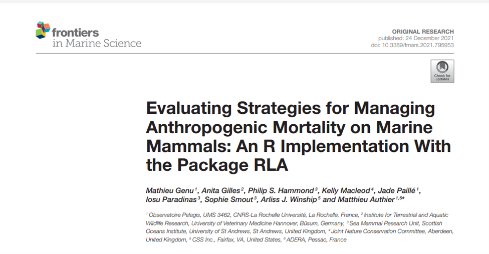
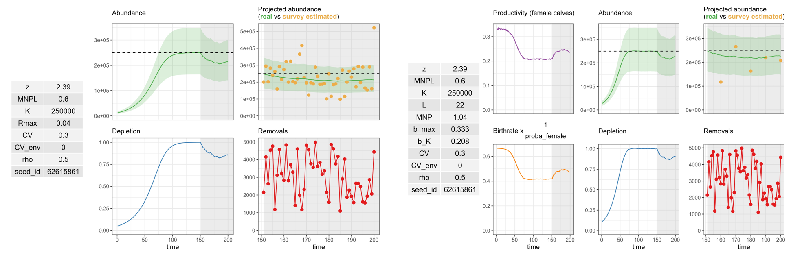
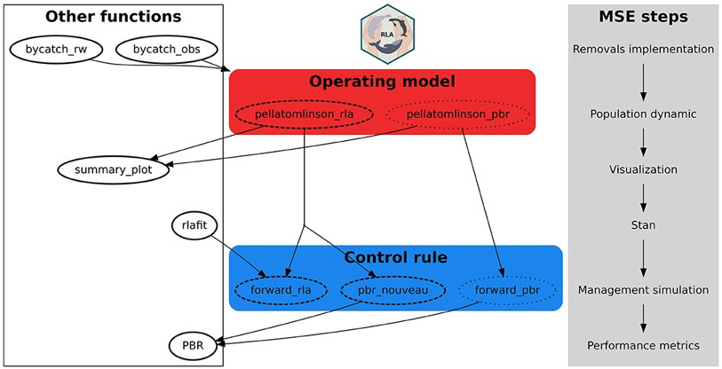
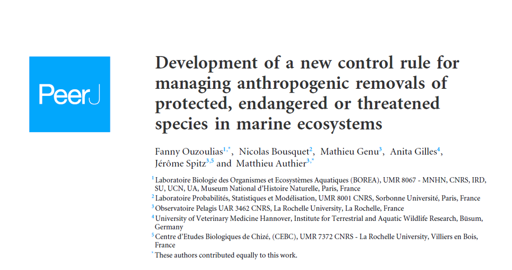

RLA

RLA in 2 words
RLA is an R package that aims to estimate removal limit of marine mammals species. Limits are estimated thanks to a control rule which is linked to a biological model of the species. The control rule correspond to an equation/algorithm that gives the limit of individuals which can be removed from the population without threatening its long-term viability (the definition of long-term viability must be provided by users). The coupled model has a chronological dimension to project future management scenarios of removal mitigation (For example, let’s say we decrease fishing effort which is a major threat for our population of marine mammal, what could be the resulting situation in 50 years ?).
MSE : Management Strategy Evaluation
The RLA package is a useful tool to simulate management scenarios projecting different possible situations. However it can be difficult to estimate robustness of different tested scenarios and estimate decision thresholds. One way to integrate these variables is to model using a MSE framework. The MSE framework is a simulation environment which will test every possible scenarios with different condition of simulation. To illustrate, let’s say we have a population of marine mammal, one scenario is to let the situation run without changing anything and another scenario is to reduce the cause of removal by 50%. However the data on which the cause of removal is estimated is very wobbly, and we suspect that data can be higher that actual records. Knowing that, with the MSE framework it is possible to integrate this situation of uncertain data and simulate adding a scenario with records underestimated by 2 or 1.5.
What’s inside {RLA} package ?
Two functions allow to simulate a population, using a Pella-tomlinson model :
pellatomlinson_agg()(agg for aggregated) which correspond to a Pella-tomlinson model age-aggregated used with PBR control rulepellatomlison_dis()(dis for disaggregated) which is a Pella-tomlinson model defined by age used with RLA control rule, or “PBR_nouveau” which is a PBR using age defined operating-model
Operating model can be summarized via graphics, using summary_plot() :

Once parameters on operating model are tuned, functions using control rules can be used :
forward_pbr()PBR control rule on age aggredated pella-tomlinson operating modelforward_rla()RLA control rule age disaggrated pella-tomlinson model

Furthermore, several functions exists orbiting around the previous ones allowing to ease tuning of parameters. For more details on the use of {RLA} package see docuentation on the gitlab repository
A new control rule ART

Link to the article here
In january 2024, a new control rule has been released in peerj journal. This new control rule uses historical removal rate and abundance of the species instead of growth parameters and depletion rate, as used in RLA control rule. It has led to an update of RLA package integrating a ne function art_nouveau() allowing to implement this control rule